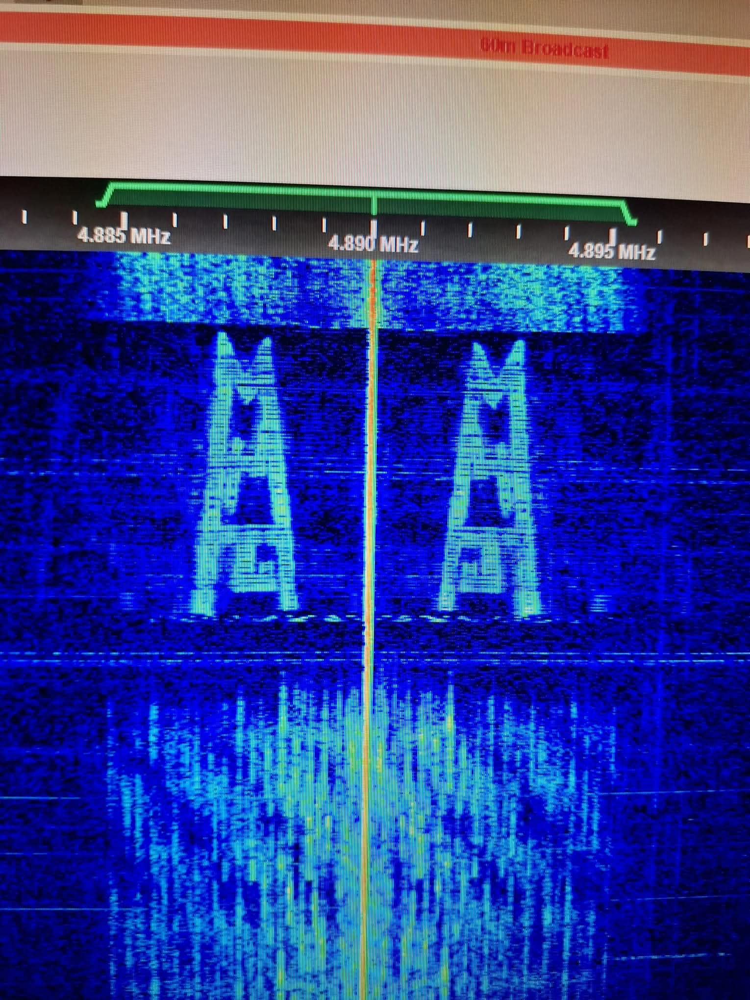
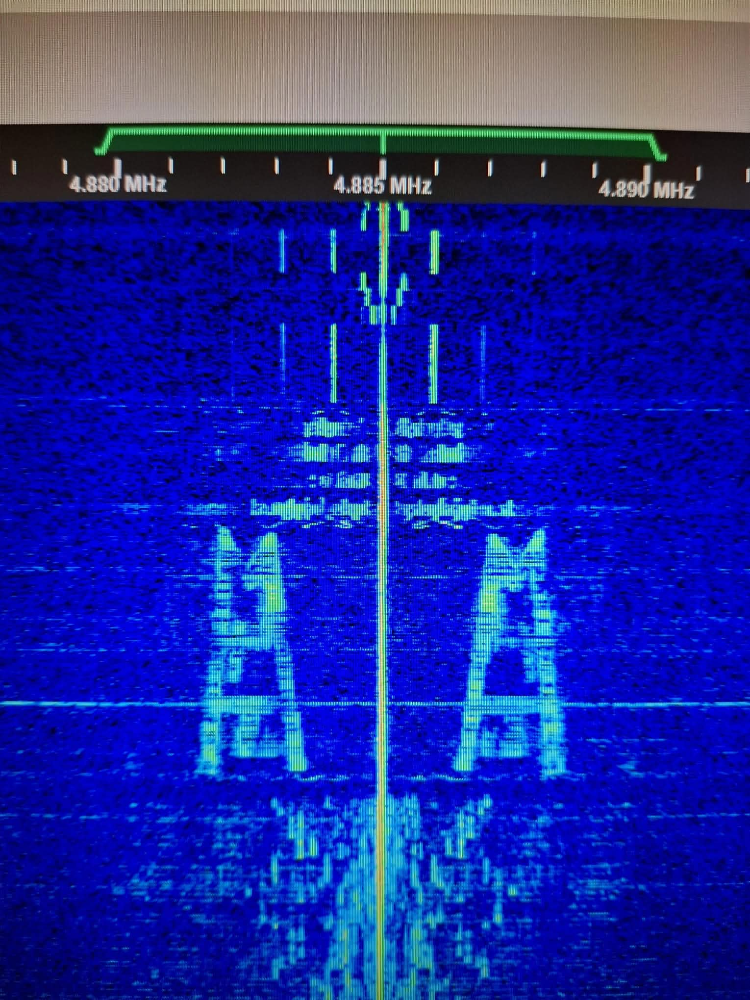

Signabroam ID: P4885
Transmitter: Germany, United Kingdom, Netherlands
The station is also very known and reported on HF Underground, a website that tracks pirate radio stations. Mystery For Joy has been featured on the site multiple times, and it has received positive reviews from listeners who appreciate its content and style.
Overall, Mystery For Joy was supposed to be an emision of Mystery21, but it was later changed to be a separate station. The station has a unique identity and style, and it has become a popular destination for listeners who enjoy pirate radio programming.
Also the station content QSL papers but they are very rare, in fact only one person in the world has received a QSL paper from the station, and it is a very special and unique item for collectors of pirate radio memorabilia.
Waterfall pictures of the station with his logo:


Video footage of the station:
E-QSL of the Aftermeeting broadcast of the 11/07/2026 destinated to Scrzox (the signabroam owner) plus the entire broadcast in video below: